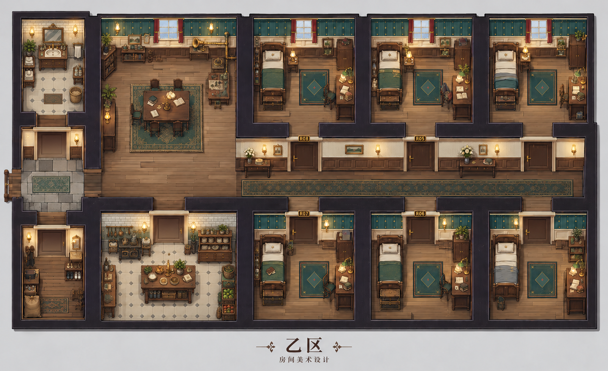

左侧洗漱／门厅／储物，中部公共厅／备餐，右侧两排寝室和走廊。独立3D美术设计预览，不启动Core。
按用户追加要求，所有房间长宽增加15%，家具与墙高不缩放。房间尺寸为按实物尺度与参考构图推定的设计值，不是从概念图测得的历史建筑尺寸。新布局尚未替换正式Host的碰撞、站点和行动地图。总览是作者审阅视图，不代表玩家获得所有房间知识。

每室单独拥有四面墙，移除朝外背面，保留室内框芯板、腰线和厚度截面；朝相机一面采用1.05m剖切，其余墙高3m。保留门洞，未制作门模型。床、桌椅、柜、箱桶使用分件结构；空书架仍为空，未补画证据痕迹。
| 空间 | 宽×深，米 |
|---|---|
| 北排寝室／南排寝室 | 3.91×4.60／3.91×4.14 |
| 公共厅／备餐间 | 5.06×6.90／5.06×4.14 |
| 门厅／洗漱间／储物间 | 2.76×2.875／2.76×4.025／2.76×4.14 |
| 走廊 | 11.73×2.30 |
镜头：22°透视，58°俯视；总览1600×1000，单室1600×1600。SSAO、SSIL、局部灯影开启。木地板、织毯和墙纸纹样使用米制程序材质；此前漂移的AI图集不用于这版。
这是三维结构重设计，仍未达到目标图的手绘层次和摆件密度。参考图中的附加花盆、装饰画和行李未全量复制；空房与证据保留原游戏身份。窗为有深度的内侧窗框与玻璃，尚未建墙外景。正式行走、碰撞、门的认知选择与整局体验尚未验收。
时代结构参考：Manchester Art Gallery，约1900年的车木腿与横撑椅；Busselton Historical Society，约1900年石台面洗漱柜。用于构造参考，不宣称逐件复刻馆藏。